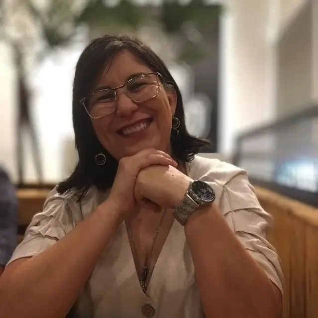
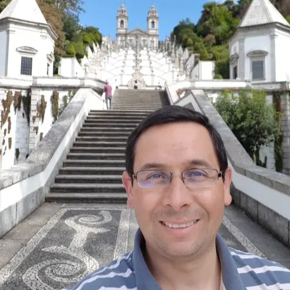
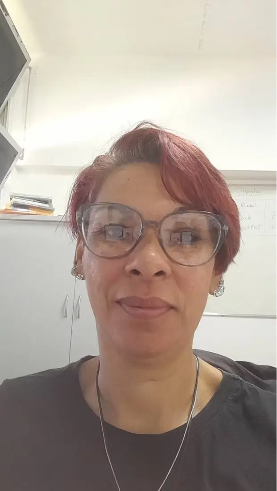
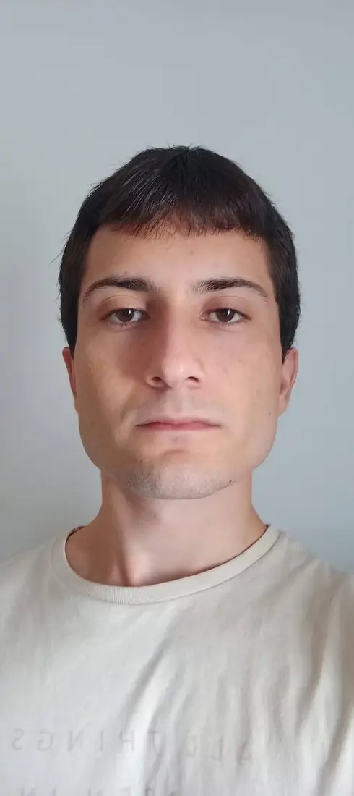
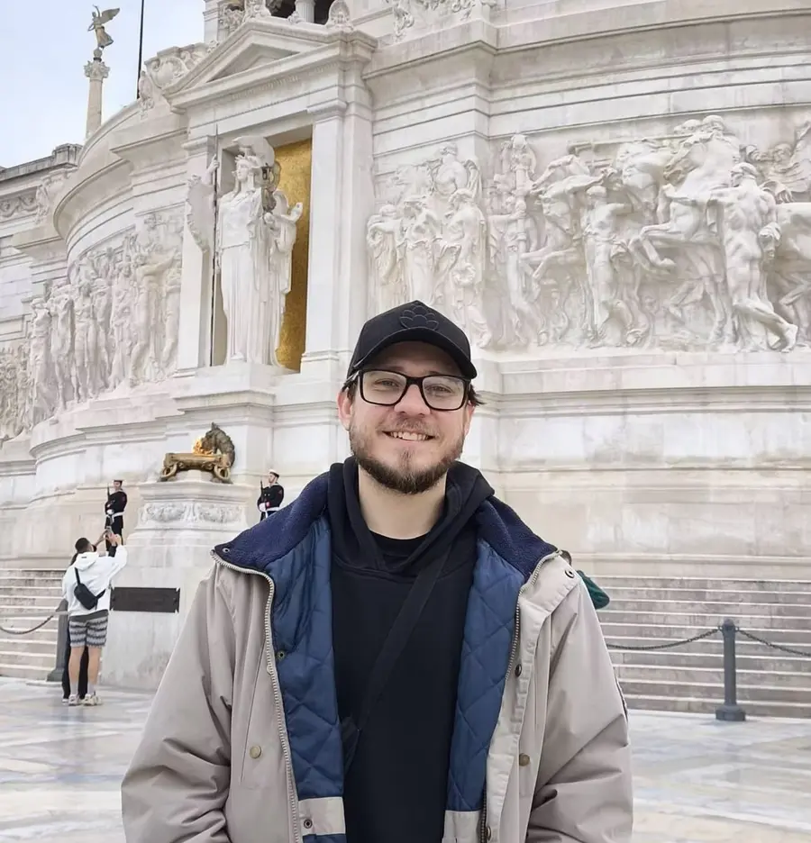
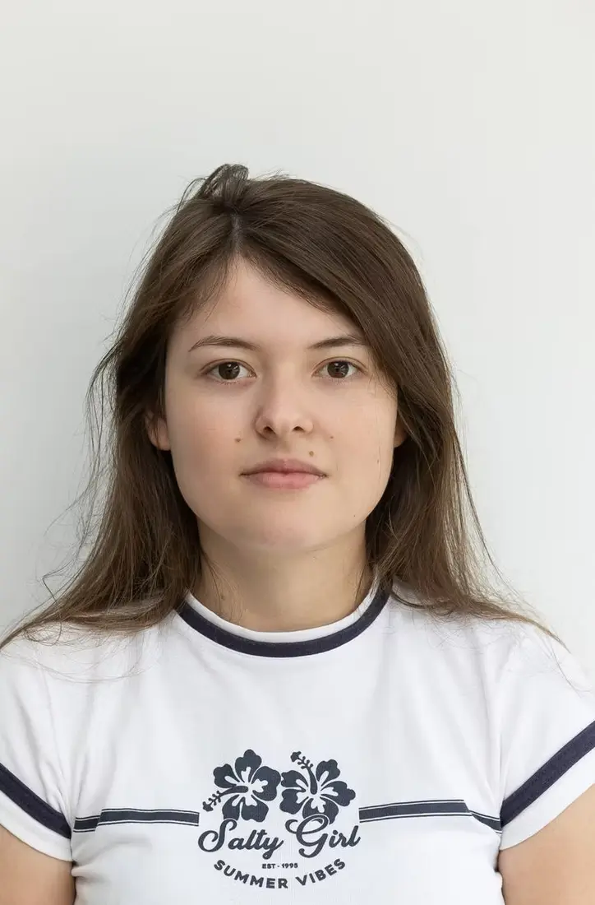

Fabiana Fátima do Prado Sedelak Pinheiro
Doutoranda no Programa de Pós-Graduação em Ensino de Ciência e Tecnologia (PPGECT) da UTFPR, campus Ponta Grossa.
Pesquisa, ensino e extensão reunidos para promover autoria e integridade acadêmica.

Professor doutor
Professor de Ensino Básico, Técnico e Tecnológico na Universidade Tecnológica Federal do Paraná, campus Ponta Grossa. É mestre em Informática pela UFPR e doutor em Ensino de Ciência e Tecnologia pela UTFPR.
Atua com integridade acadêmica e prevenção ao plágio, desenvolvendo pesquisas e materiais educativos. É autor da tese sobre plágio em teses e dissertações de programas de pós-graduação na área de Ensino e da cartilha “Plágio: Não Copie Essa Ideia”.
Consultar Currículo LattesPesquisadoras, estudantes e colaboradores que conectam formação acadêmica, pesquisa e desenvolvimento às ações do projeto.

Doutoranda no Programa de Pós-Graduação em Ensino de Ciência e Tecnologia (PPGECT) da UTFPR, campus Ponta Grossa.

Mestra pelo Programa de Pós-Graduação em Ensino de Ciência e Tecnologia e colaboradora externa vinculada ao IFPR, campus Palmas.

Estudante de Ciência da Computação na UTFPR, campus Ponta Grossa, e bolsista PIBIS com apoio da Fundação Araucária.

Estudante de Análise e Desenvolvimento de Sistemas na UTFPR, campus Ponta Grossa.

Estudante da UTFPR, campus Ponta Grossa, e integrante da equipe do projeto.